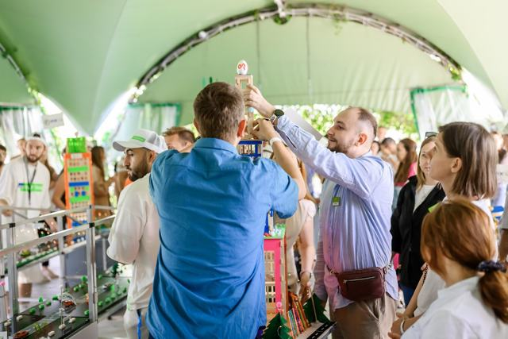
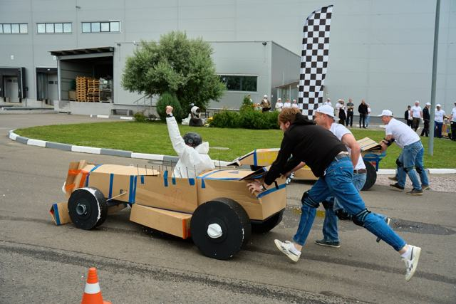

Почему разработчики не любят «весёлые старты» и какие командные игры им заходят
Черновик · выходит: 14.12 10:00Поправить: напиши боту «правка W51 habr 01: что поменять» и приложи фото. Без правок выйдет как есть.
Если на тимбилдинге для разработчиков есть эстафета с мешками и караоке, через полчаса часть команды стоит у стены с телефонами. Это не снобизм и не «интроверты такие». У IT-команд есть три привычки из работы, которые ломают обычную корпоративную игру. Я руковожу ивент-агентством, мы с 2010 года провели больше 5 000 проектов, среди клиентов есть ВКонтакте, Сравни.ру и КРИПТОНИТ. Ниже то, что мы поняли на этих проектах: почему стандартные программы не работают и как устроить игру, в которую разработчики включаются сами.
Три вещи, которые ломают стандартную программу
**Нелогичные правила видят за 5 минут.** Разработчик читает правила игры как спецификацию. Если за правильный ответ дают 3 балла, а за «креативность» 10, и никто не объясняет, как креативность считают, команда это замечает почти сразу. Дальше два сценария: люди либо ищут дыру в правилах и выигрывают на ней, либо перестают играть. Ни то, ни другое не тимбилдинг.
Что мы делаем: судим только по измеримым критериям. Время, точность совместной работы, число модулей, которые сработали. Никаких баллов «за артистизм», которые ведущий выставляет на глаз.
**Не любят принудительную публичность.** Караоке, танцевальный батл, «а теперь каждая команда показывает сценку» на IT-группе дают обратный эффект. Люди не стесняются, они просто не понимают, зачем это. В итоге выступают двое самых смелых, остальные ждут конца.
Публичный момент у нас один: защита проекта на 2 минуты в финале. И защищают результат, а не себя: что построили, где была проблема, как решили. Это знакомый жанр, примерно как демо на спринт-ревью.
**Люди из разных отделов впервые говорят голосом.** Продуктовая команда, инженеры и поддержка годами общаются в тикетах и чатах. На игре они впервые решают одну задачу вслух, в одной комнате. Это самый ценный эффект, и его легко потерять, если рассадить людей по отделам. Поэтому команды мы собираем смешанные заранее, ещё до дня игры, чтобы разработка и поддержка попали в одну задачу.
Игра как проект с ТЗ
Мы перестали называть это «весёлой программой» и стали описывать игру как маленький проект. У команды есть ресурс, лимит времени и критерий приёмки. Ведущий работает не аниматором, а координатором: отвечает на вопросы по ТЗ, следит за временем и ничего не решает за команды.
Например, в игре «Мегаполис» каждая команда строит свой квартал города из картона. Кварталы должны стыковаться: дороги, коммуникации, границы участков. Договориться можно только напрямую с соседней командой. Если две команды не поговорили, город не собирается, и это видно всем. Разговор после игры про то, как продуктовые и инженерные команды договариваются о границах, начинается сам.
В «Машине Голдберга» команды строят по одному модулю цепной реакции: шарик катится, падает домино, срабатывает рычаг, дальше следующий модуль. Цепь запускают один раз. Если модуль одной команды сбоит, это видят все участники. Для людей, которые каждый день думают про зависимости между сервисами, эта метафора не требует объяснений.
Что ещё заходит IT-командам
Кроме инженерных строек, у нас хорошо работают три группы форматов.
**Игры с нейросетями.** В «Стартапе с нейросетями» команды за час собирают продукт в Claude, ChatGPT и Midjourney и защищают его перед залом. Для технической аудитории новизна здесь в инструменте, а не в декорациях.
**Логика и скорость.** Интеллектуальная игра «Где логика» помещается в переговорную и обеденный перерыв, квиз тоже. Это формат для офиса, когда большой выезд не нужен.
**Движение без спортивной подготовки.** В «Формуле-1» команды строят картонные болиды и выводят их на трассу. Спортивная форма не нужна, а инженерная часть (как сделать, чтобы конструкция доехала и не развалилась) занимает инженеров не меньше самой гонки. Для компании КРИПТОНИТ мы проводили такие гонки на 400 участников в июле 2024 года.
Для сравнения ещё два проекта из отзывов: Сравни.ру взяли Фестиваль Фудтраков на 300 человек в июле 2024, Utrace Машину Голдберга на 100 человек в августе 2024. Разные форматы, но общий принцип: у команды есть понятная задача и измеримый результат.
Если команда распределённая
IT-компании часто держат разработку в нескольких городах. Тогда тимбилдинг оказывается днём, когда люди впервые видят друг друга вживую. Наш опыт такой: распределённой команде нужен один выездной день в году с одной большой программой на 4-6 часов. Не набор мелких активностей, а одна общая задача. Люди прилетели ради общего результата, а не ради разминки.
Для тех, кто постоянно работает в офисе, остаются короткие форматы на 2-3 часа раз в квартал. Они держат контакт между отделами в промежутках между большими выездами.
Как понять, что сработало
Самая честная метрика, которую я знаю: компания возвращается. Часть наших IT-клиентов заказывает вторую и третью программу, меняя формат под задачу года. На повторах видно, что игра сработала, а не просто заняла день в календаре.
Если коротко, вот чек-лист для тимлида или HR, который выбирает программу:
1. Правила игры можно прочитать как ТЗ и найти в них критерий приёмки.
2. Судят по времени, точности или работающему результату, а не «по впечатлению жюри».
3. Публичное выступление одно, короткое, и про результат, а не про таланты.
4. Команды смешанные, собраны заранее, в каждой есть люди из разных отделов.
5. Задача такая, что одна команда не может выиграть, не договорившись с соседней.
Если программа проходит по этим пяти пунктам, разработчики в неё включаются. Если нет, никакой ведущий не вытащит людей от стены.
Подробнее про форматы, которые мы проводим для IT-отделов, и таблицу «задача руководителя → формат»: https://catalystrussia.ru/programmy/timbilding-dlya-it-komandy/?utm_source=habr&utm_medium=article&utm_campaign=zavod-w48
*Мария Варламова, генеральный директор ивент-агентства Каталист*

